The Westbrook Home Restoration
Jackson, Mississippi
The restoration of this historically significant home included foundation stabilization and complete reconstruction of the exterior masonry veneer. It also included returning the interior to its original grandeur, to be used for meetings, weddings, receptions, and banquets.
Partially Completed 2005
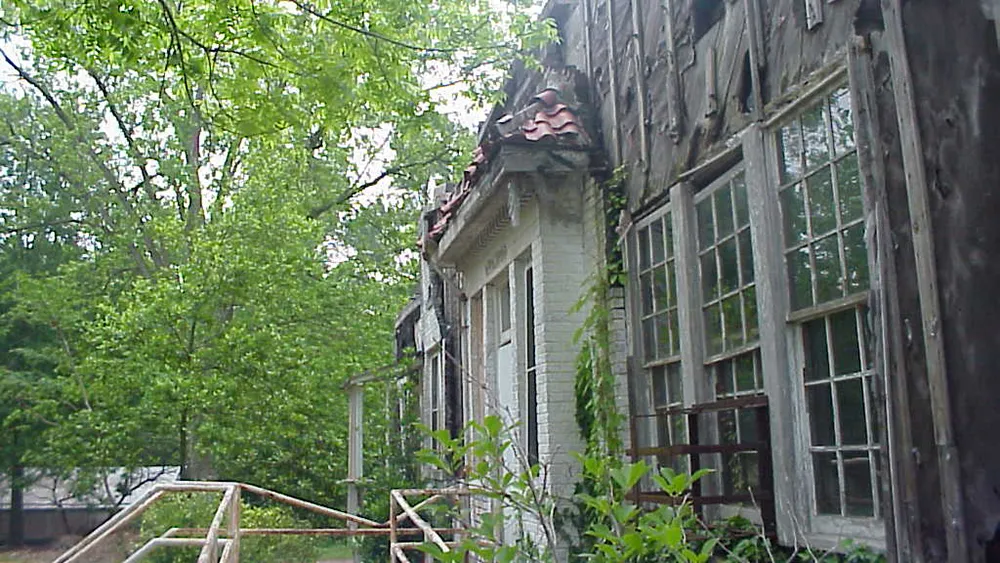
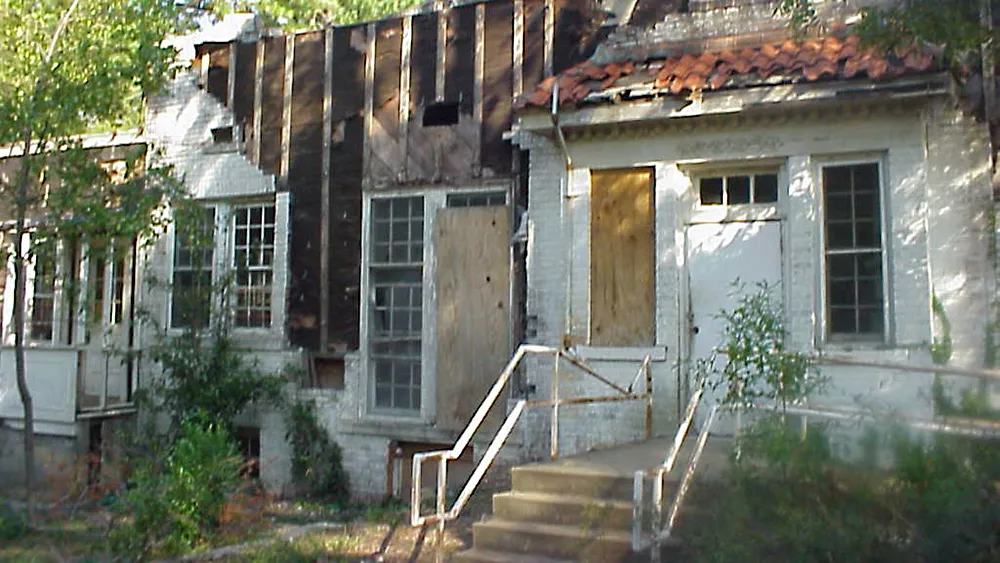
 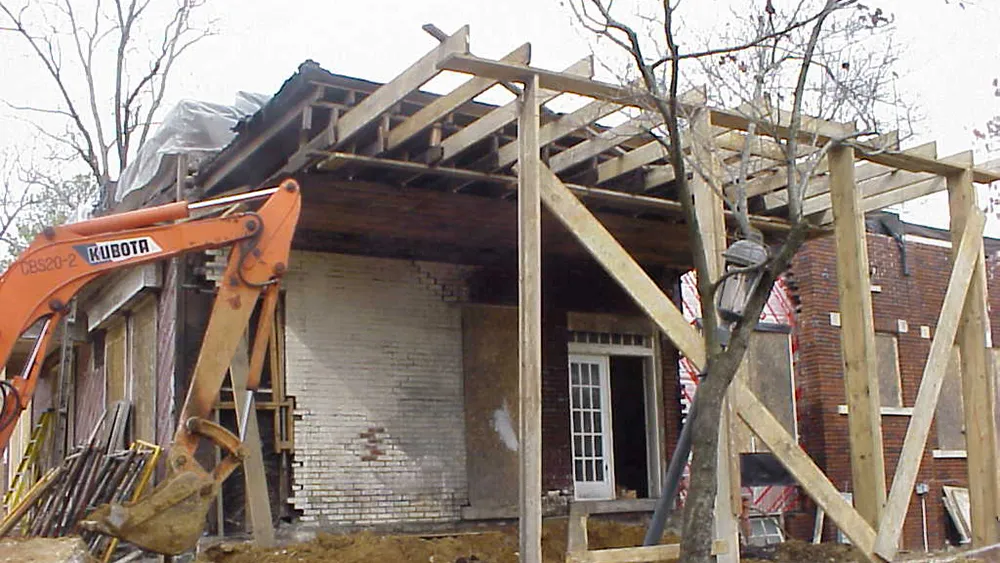
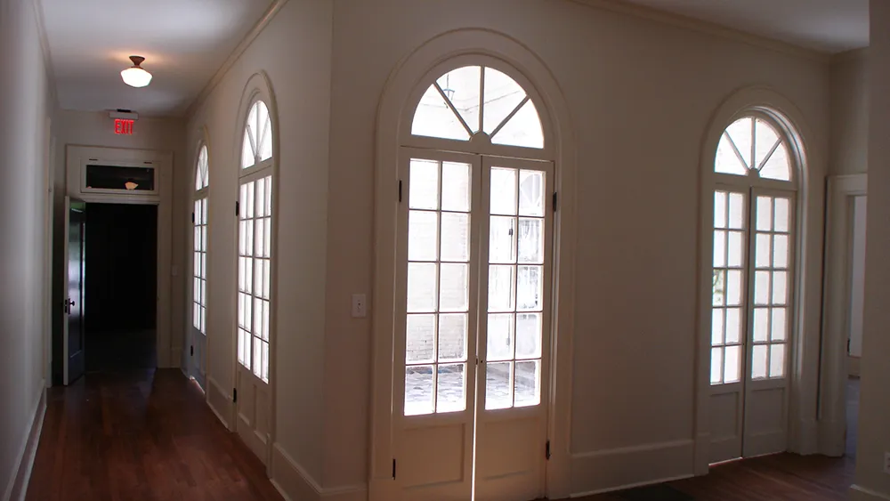
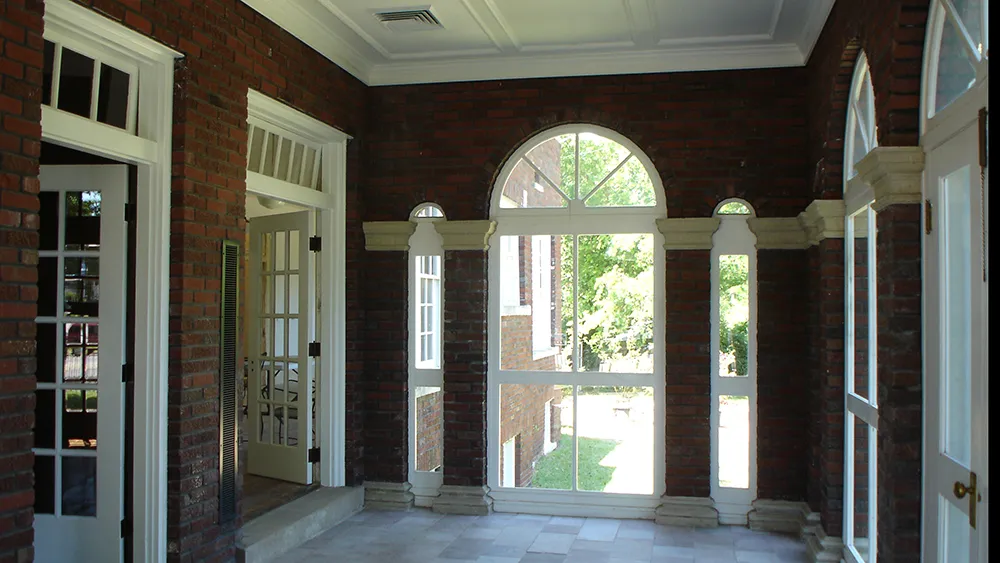
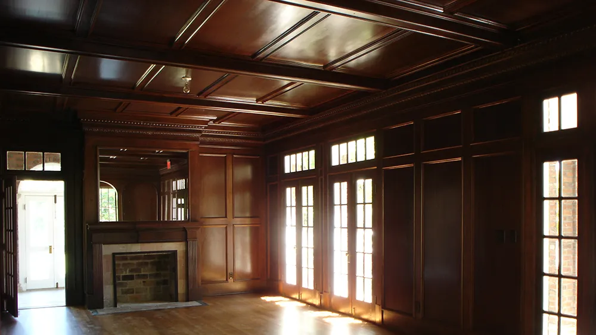
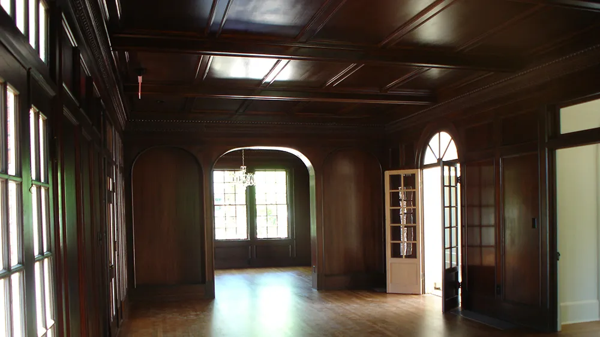
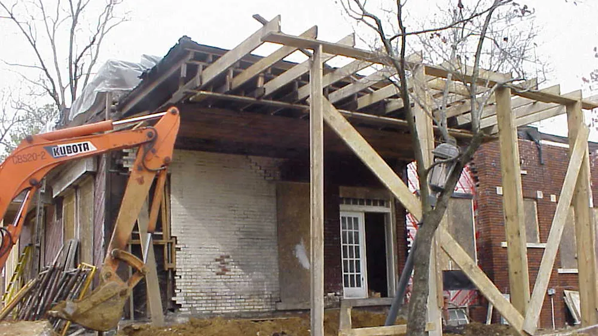
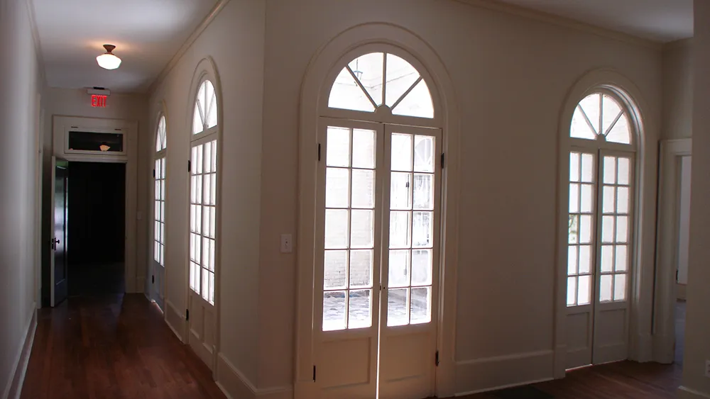
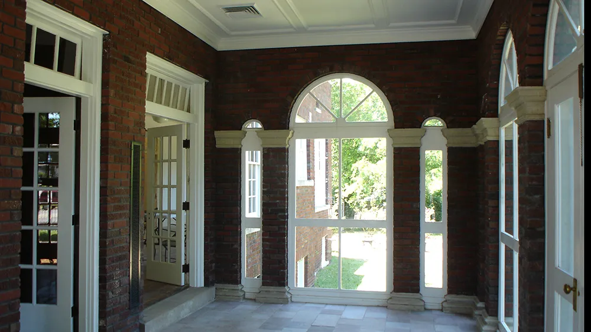
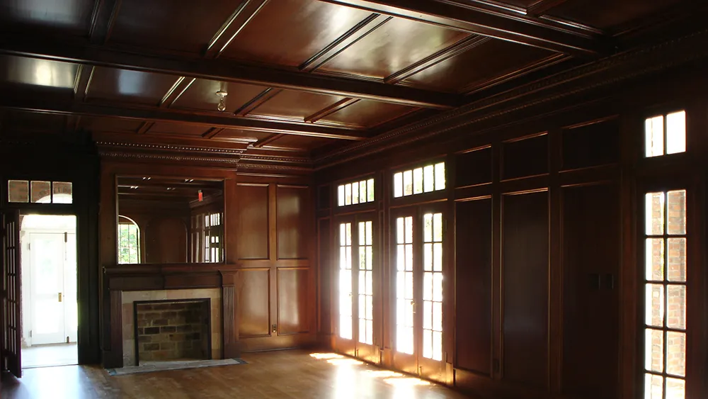
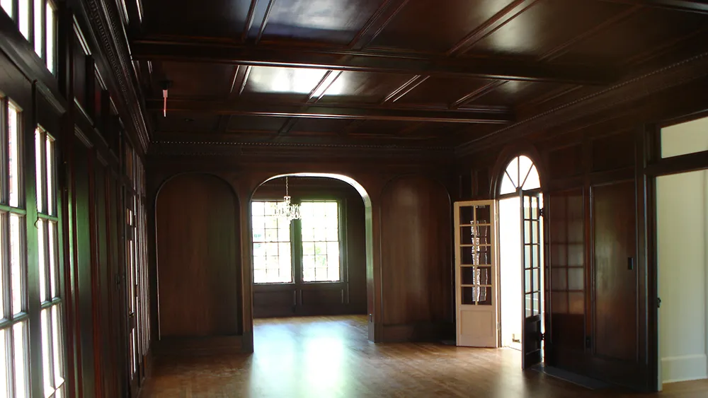
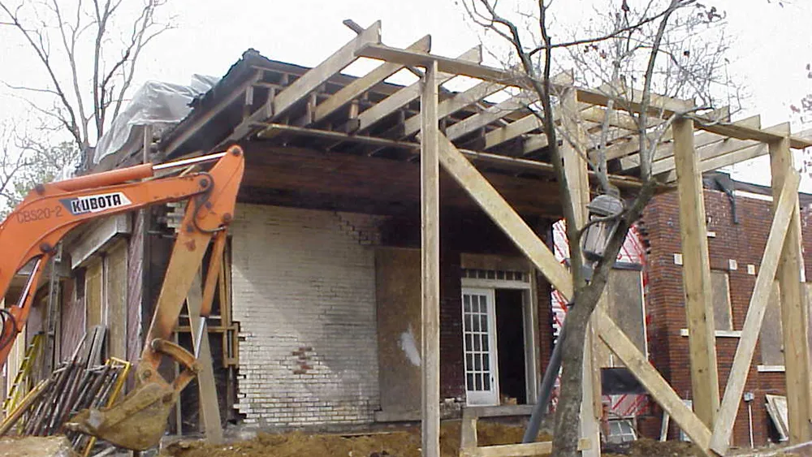
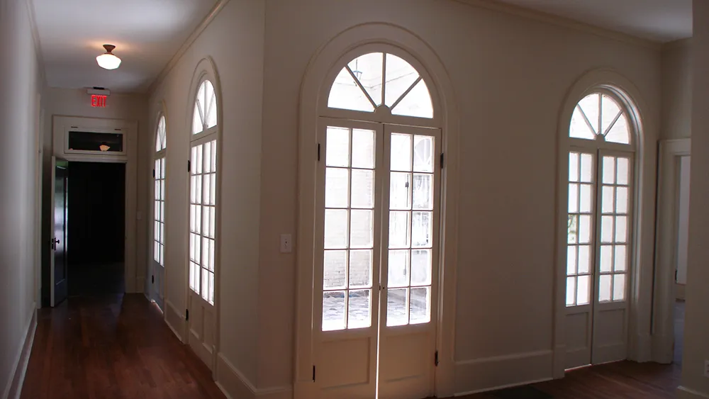
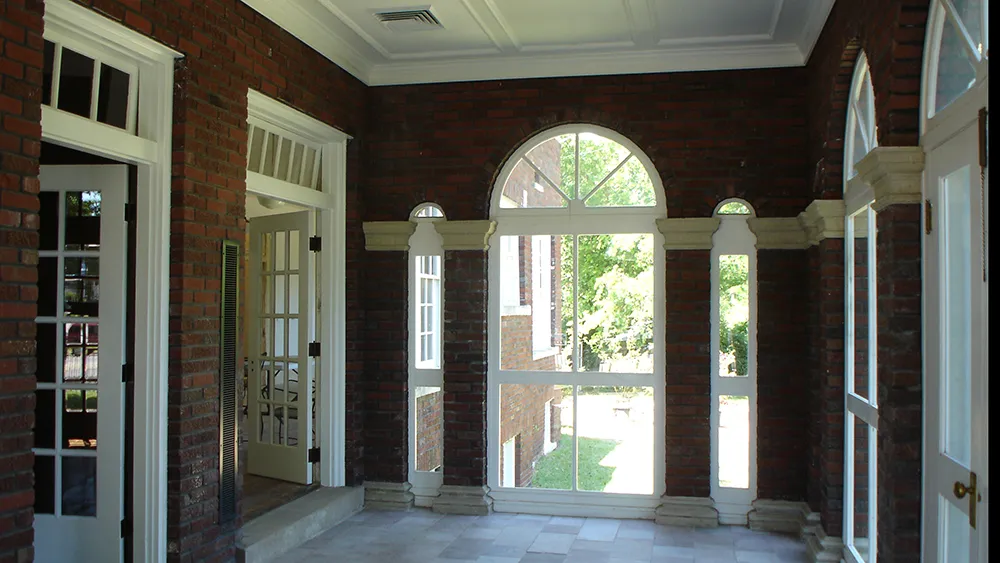
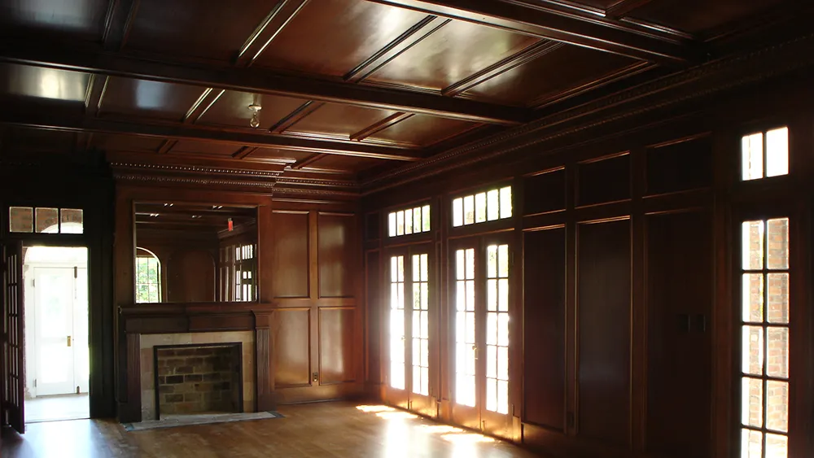
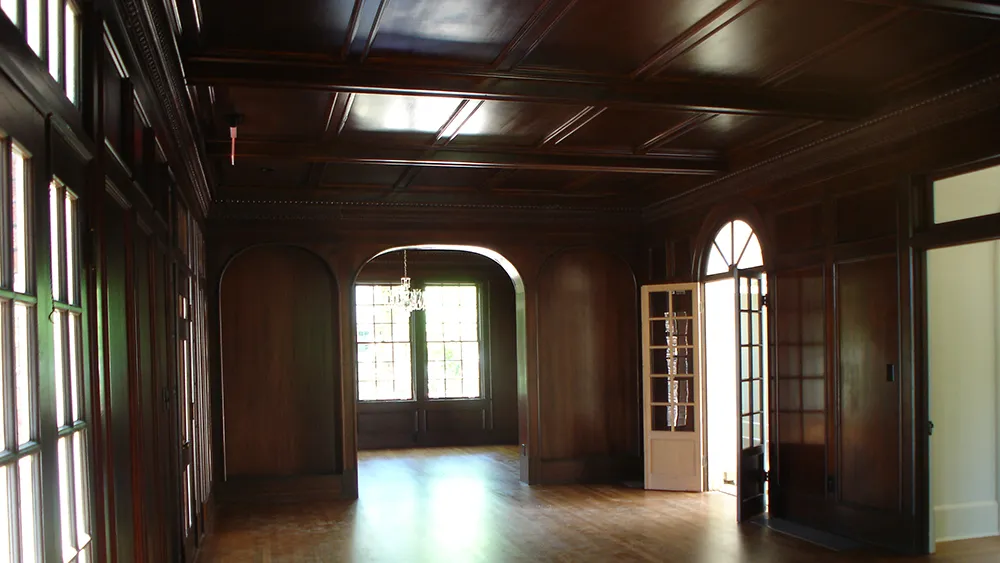